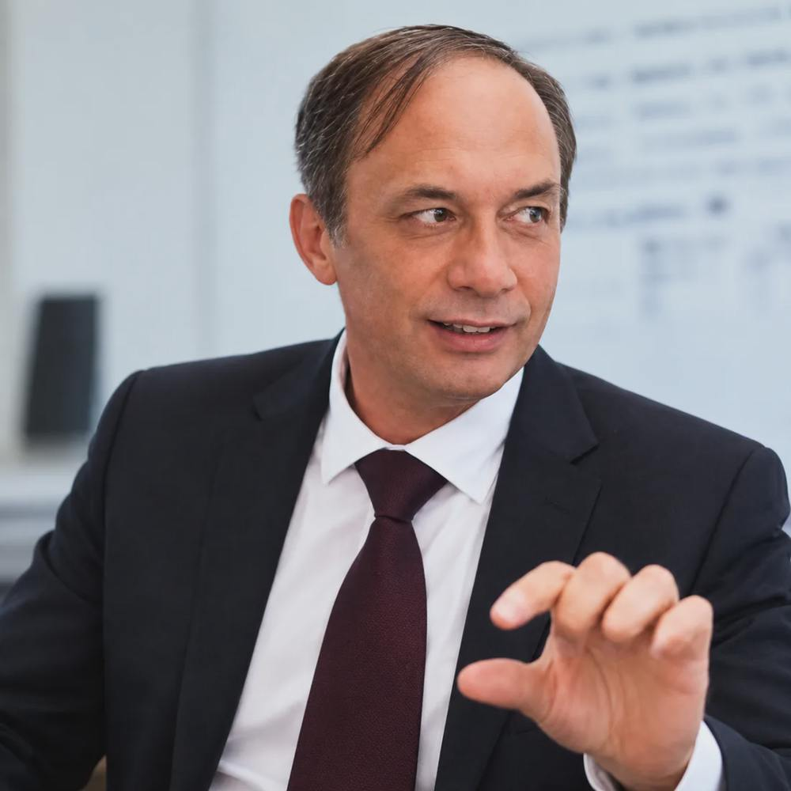

Software & integratie
.NET, C#, VB.NET, ASP.NET, MVC, REST, SOAP, XML/JSON, middleware, API's en eventgedreven integratie.
Een professioneel overzicht van ontwikkeling, architectuur, infrastructuur, cloud en media — helder gepresenteerd in de SITAKS-stijl.
Solutions Architect en IT-professional met een loopbaan in softwareontwikkeling, systeemintegratie, cloudtransformatie en infrastructuurbeheer.
Peter vertaalt bedrijfsbehoeften naar duurzame technische oplossingen, van analyse en API-design tot implementatie, uitrol en ondersteuning. Hij combineert hands-on ontwikkeling met architectuur, coördinatie van leveranciers en operationeel beheer.
Naast zijn IT-loopbaan werkt hij sinds 1996 als radiomaker en redacteur — een combinatie van technologie, storytelling, interviewtechniek en heldere communicatie.

SITAKS · TECHNOLOGY & CREATIVITY.NET, C#, VB.NET, ASP.NET, MVC, REST, SOAP, XML/JSON, middleware, API's en eventgedreven integratie.
Azure IaaS/PaaS, AVD, netwerken, identiteit, hybride architectuur, virtualisatie en modernisering van on-premise omgevingen.
SQL Server, Oracle, MySQL, ERP, TMS, datatransformaties, complexe bedrijfsprocessen en oplossingsontwerp.
Azure DevOps, CI/CD, releaseprocessen, CASCM, ITIL, Agile/Scrum, monitoring en kwaliteitsborging.
Technische analyse, change management, leveranciersafstemming, projectcoördinatie en begeleiding van multidisciplinaire teams.
Livepresentatie, interviews, professionele webredactie, journalistieke structuur en begrijpelijke stakeholdercommunicatie.
Chronologisch overzicht op basis van het aangeleverde CV. Overlappende periodes vertegenwoordigen gelijktijdige projecten of activiteiten.
Middleware · Azure · AVD · Infrastructuur
C# · VB.NET · .NET · PHP · Oracle · SQL Server · MySQL · Blazor · Azure · API Management
.NET 4.0 · VB6/VB.NET · DB2 · WinForms · PL/I
C# · .NET · SQL Server · WinForms
C# · VB.NET · SQL Server · ADO.NET · TFS · Windows Services
.NET · SQL Server · ADO.NET · Java / Android
CASCM · TFS · Visual Studio · Oracle · C# · VB.NET
.NET 3.5 · VB.NET · XML · TFS · Windows Reporting
Java · JUnit · RAD/RSA · Oracle · NetBeans · SCRUM
ASP.NET 1.1 · VB.NET · XML · DB2 · DB2 Connect
Doorlopende ervaring als radiopresentator en redacteur voor verschillende zenders. De werkzaamheden omvatten live-uitzendingen, interviews, redactioneel schrijfwerk en het begrijpelijk vertalen van complexe informatie voor luisteraars en stakeholders.
Die communicatieve achtergrond versterkt zijn werk in technische teams, architectuur en projectcoördinatie.
Audio & Broadcasting ↗Voor professionele vragen en projecten gebruik je het beveiligde SITAKS-contactformulier. Privécontactgegevens worden niet op deze CV-pagina vermeld.